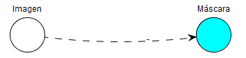
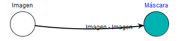

Enlaces
Los enlaces relacionan los nodos entre ellos, conectando los datos de entrada y salida para permitir el funcionamiento del
programa.
Los enlaces se dibujarán con una línea discontinua si la entrada o la salida están sin asignar.

Cuando un enlace tenga tanto su entrada como su salida ya asignadas se dibujará con una línea continua y más ancha. También
aparecerán escritas la entrada y la salida asignadas.
